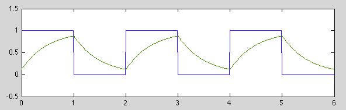
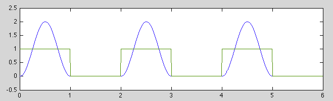
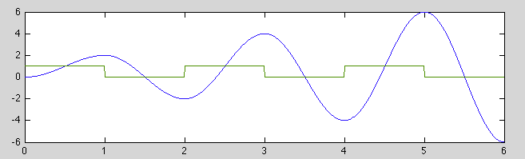

Example 1
Consider the steady state response of a first order RC circuit with the
parameter  to a square impulse train of period
to a square impulse train of period  :
:
where is the on-time and is off-time of the impulse train.
Consider the response
 during both the on and off periods:
during both the on and off periods:
- The on-time response can be found based on the assumed initial condition
:
In particular,
- The off-time response can be found based on the initial condition
to be
In particular,
The two voltages  and
and  can then be found by solving these two
simultaneous equations:
Substituting the first equation into the second one we can find and then
:
Consider some special cases:
can then be found by solving these two
simultaneous equations:
Substituting the first equation into the second one we can find and then
:
Consider some special cases:
- When
and
, all exponential terms become zero
and we have
 and , i.e., the capacitor is fully charged and
then fully discharged.
and , i.e., the capacitor is fully charged and
then fully discharged.
- When
and
, all exponential terms can be
approximated by
, and we have:
which is the average value of the impulse train.
- when
, we have
and

Here
, .
Example 2
Consider the steady state response of an undamped second order system with
parameters  and
and  to a symmetric square impulse train of
period :
to a symmetric square impulse train of
period :
where is both the on and off-time of the impulse train, which can also
be written as:
The response of the 2nd order system can be obtained based on its step
response
(with some constant coefficient which
is neglected):
We now consider two special cases:
- If
is the same as the natural period of
the 2nd order system, then
and we have
the following for all integer
 :
:
-
 |
(274) |
-
We see that as
 , more terms will be included in
, more terms will be included in
 , which is zero when an even number of terms are included, but
when an odd number of terms are included.
, which is zero when an even number of terms are included, but
when an odd number of terms are included.

- If
, the period of the impulse train is
the same as the natural period
of the 2nd system,
This is a sinusoid growing linearly.
